अध्याय 1: दो ध्रुवीयता का अंत
(The End of Bipolarity)
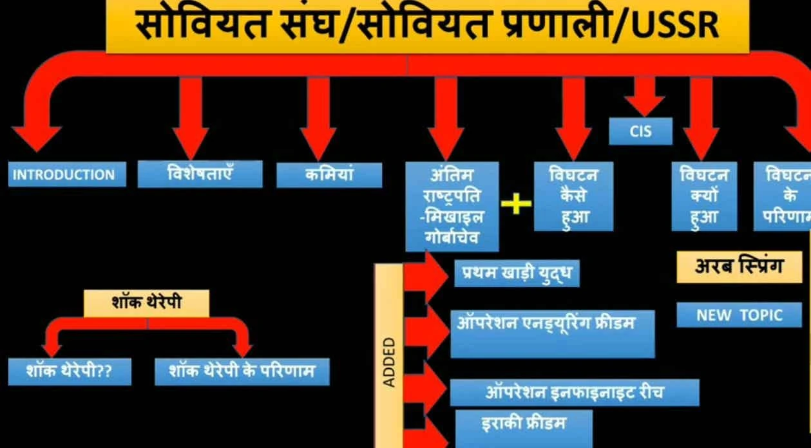
इस माइंडमैप में पूरे अध्याय "दो ध्रुवीयता का अंत" के सभी प्रमुख विषयों—सोवियत संघ की विशेषताएं, पतन के कारण, गोर्बाचेव के सुधार, विघटन के परिणाम, शॉक थेरेपी और मध्य एशियाई संकटों की एक व्यापक झलक दी गई है।
भाग 1: ऐतिहासिक पृष्ठभूमि
1. प्रस्तावना (Introduction)
द्वितीय विश्व युद्ध (1945) के बाद वैश्विक राजनीति में एक बड़ा बदलाव आया। दुनिया दो बड़ी महाशक्तियों—संयुक्त राज्य अमेरिका (USA) और सोवियत संघ (USSR) के बीच बंट गई। इन दोनों के बीच वैचारिक प्रतिद्वंद्विता और हथियारों की होड़ को 'शीत युद्ध' (Cold War) कहा गया। इस द्विध्रुवीय विश्व में दोनों गुटों के विभाजन का सबसे प्रमुख प्रतीक **बर्लिन की दीवार** थी।
महत्वपूर्ण घटनाक्रम:
- 1961: बर्लिन की दीवार खड़ी की गई (पूंजीवादी और साम्यवादी विभाजन का प्रतीक)।
- 9 नवंबर 1989: बर्लिन की दीवार को आम जनता द्वारा गिरा दिया गया।
- 1990: जर्मनी का शांतिपूर्ण एकीकरण हुआ।
- 25 दिसंबर 1991: सोवियत संघ (USSR) का आधिकारिक रूप से पतन हुआ।
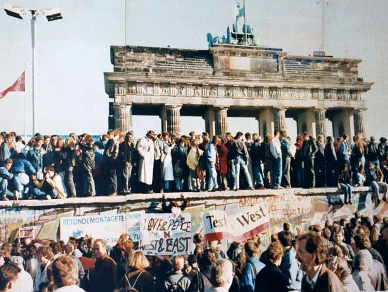
1961 में खड़ी की गई बर्लिन की दीवार पूंजीवादी (पश्चिमी) और साम्यवादी (पूर्वी) दुनिया के विभाजन का सबसे बड़ा प्रतीक थी। 9 नवंबर 1989 को इसे आम जनता द्वारा गिरा दिया गया, जो शीत युद्ध के अंत का ऐतिहासिक क्षण बना।
• प्रश्न: बर्लिन की दीवार किसका प्रतीक थी और इसका पतन कब हुआ?
• उत्तर: बर्लिन की दीवार पूंजीवादी और साम्यवादी दुनिया के विभाजन का प्रतीक थी। इसका पतन 9 नवंबर 1989 को हुआ था।
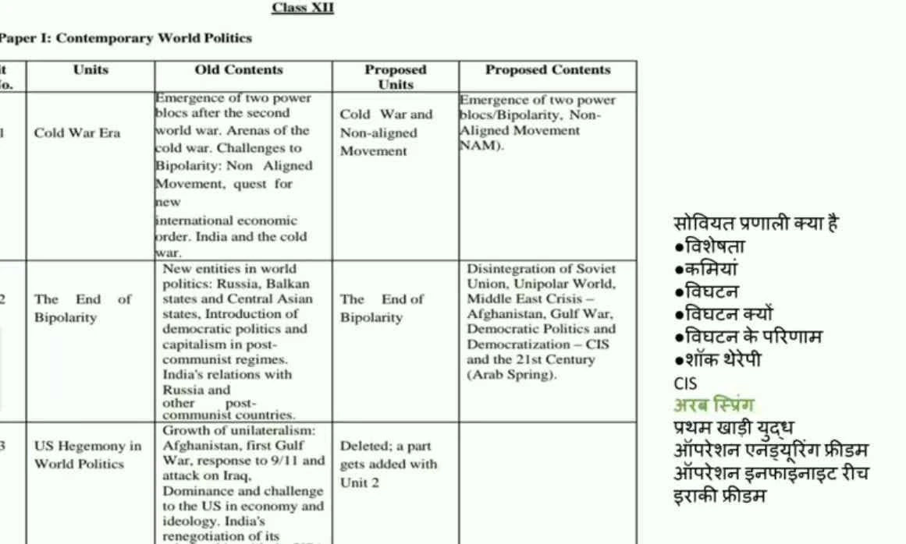
यह तालिका दर्शाती है कि वर्तमान बोर्ड परीक्षाओं के लिए पाठ्यक्रम में क्या बदलाव हुए हैं और कौन-से नए विषय (जैसे मध्य-पूर्व संकट - अफ़गानिस्तान, प्रथम खाड़ी युद्ध, सीआईएस, और अरब स्प्रिंग) इस अध्याय में जोड़े गए हैं।
2. रूस की पृष्ठभूमि: बोल्शेविक क्रांति (1917)
सोवियत संघ के निर्माण की नींव 1917 की बोल्शेविक समाजवादी क्रांति थी। यह क्रांति रूस में ज़ार के शासन और पूंजीवादी व्यवस्था के विरोध में हुई थी। इसके नेता व्लादिमीर लेनिन थे, जिन्होंने मार्क्सवादी समाजवाद के सिद्धांतों पर आधारित एक समतामूलक समाज के गठन का मार्ग प्रशस्त किया।
इसके परिणाम स्वरूप 15 गणराज्यों को मिलाकर यूनियन ऑफ सोवियत सोशलिस्ट रिपब्लिक्स (USSR) का जन्म हुआ।
भाग 2: सोवियत प्रणाली (The Soviet System) और उसकी गहराई
सोवियत प्रणाली एक ऐसी राजनीतिक और आर्थिक व्यवस्था थी जिसका मुख्य उद्देश्य समाज में समानता लाना था। इसमें निजी संपत्ति (Private Property) और निजी उद्योगों को समाप्त करके सभी संसाधनों पर राज्य का कड़ा नियंत्रण स्थापित किया गया था।
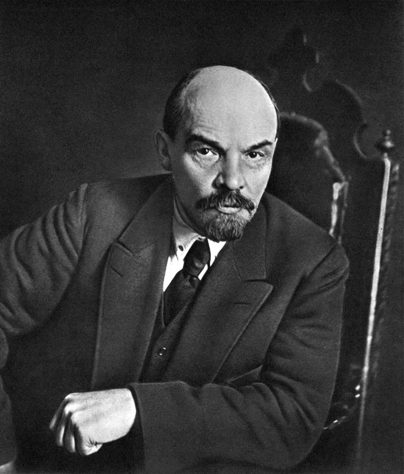
व्लादिमीर लेनिन (Vladimir Lenin) (1870 - 1924)
• परिचय: बोल्शेविक समाजवादी क्रांति (1917) के प्रणेता और सोवियत संघ (USSR) के संस्थापक अध्यक्ष।
• योगदान: मार्क्सवाद के असाधारण विचारक और उसे व्यावहारिक रूप देने वाले महान क्रांतिकारी नेता। उन्होंने पूंजीवाद का पुरजोर विरोध किया और समतामूलक समाज की वकालत की।

जोसेफ स्टालिन (Joseph Stalin) (1879 - 1953)
• परिचय: सोवियत संघ के दूसरे बड़े नेता (1924-1953)।
• योगदान: सोवियत संघ के औद्योगीकरण को गति दी, कृषि का बलपूर्वक सामूहिकीकरण (Collectivization) किया और द्वितीय विश्व युद्ध (1939-1945) में सोवियत संघ को ऐतिहासिक जीत दिलाई। उनके दौर को 'कड़े नियंत्रण' और विरोधियों के दमन के लिए भी याद किया जाता है।
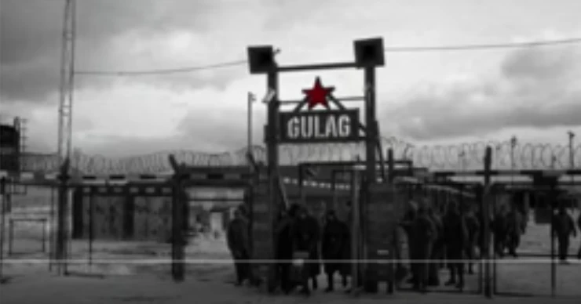
स्टालिन के शासन में विरोधियों को कुचलने के लिए 'गुलाग' (Gulag) नामक कड़े श्रम शिविर बनाए गए थे:
- कृषि का सामूहिकीकरण: 1928 में शुरू की गई इस योजना में किसानों की ज़मीन छीनकर सरकारी फार्मों में बदल दिया गया। विरोध करने वालों को मौत या गुलाग की सजा मिली।
- लाखों की मृत्यु: स्टालिन के कार्यकाल में 1 करोड़ 80 लाख से अधिक लोगों को गुलाग में बंद किया गया और लाखों लोगों को मार दिया गया।
• प्रश्न: कृषि का सामूहिकीकरण (Collectivization of Agriculture) किस नेता ने किया और इसका क्या परिणाम रहा?
• उत्तर: जोसेफ स्टालिन ने। इसके कारण विरोध करने वाले किसानों और कुलकों (अमीर किसानों) का बड़े पैमाने पर दमन किया गया और भीषण अकाल पड़ा।
1. सोवियत प्रणाली की मुख्य विशेषताएं (Features)
- संपूर्ण राज्य नियंत्रण (State Control): ज़मीन, बैंक, कारखाने, अस्पताल और परिवहन पर सरकार का सीधा मालिकाना हक था।
- जटिल संचार प्रणाली: द्वितीय विश्व युद्ध के बाद से सोवियत संघ के पास अत्यंत उन्नत संचार प्रणाली (Advanced Communication Systems) थी।
- विशाल ऊर्जा संसाधन: सोवियत संघ के भूभाग में तेल, लोहा, कोयला, और इस्पात के अपार भंडार थे।
- न्यूनतम जीवन-स्तर (Minimum Standard of Living): सरकार ने हर नागरिक के लिए स्वास्थ्य, शिक्षा, बच्चों की देखभाल, और परिवहन जैसी बुनियादी ज़रूरतें अत्यंत रियायती (Subsidy) दरों पर या फ्री उपलब्ध कराई थीं।
- बेरोजगारी नहीं: वहां बेरोजगारी बिल्कुल भी नहीं थी क्योंकि हर कोई सरकार के लिए किसी न किसी रूप में काम करता था।
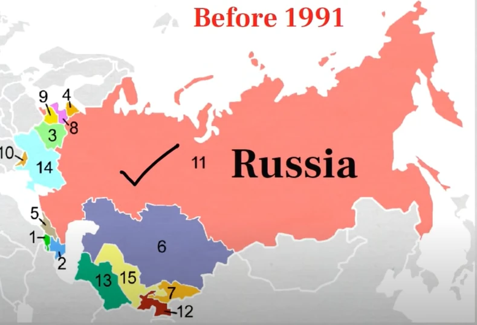
सोवियत संघ 15 भिन्न-भिन्न गणराज्यों को मिलाकर बना था। इस मानचित्र में उन सभी 15 गणराज्यों की भौगोलिक स्थिति और सीमाओं को स्पष्ट रूप से देखा जा सकता है, जिसमें सबसे विशाल रूसी गणराज्य था।
2. विज्ञान और अंतरिक्ष में सोवियत उपलब्धियां (Soviet Space & Science Success)
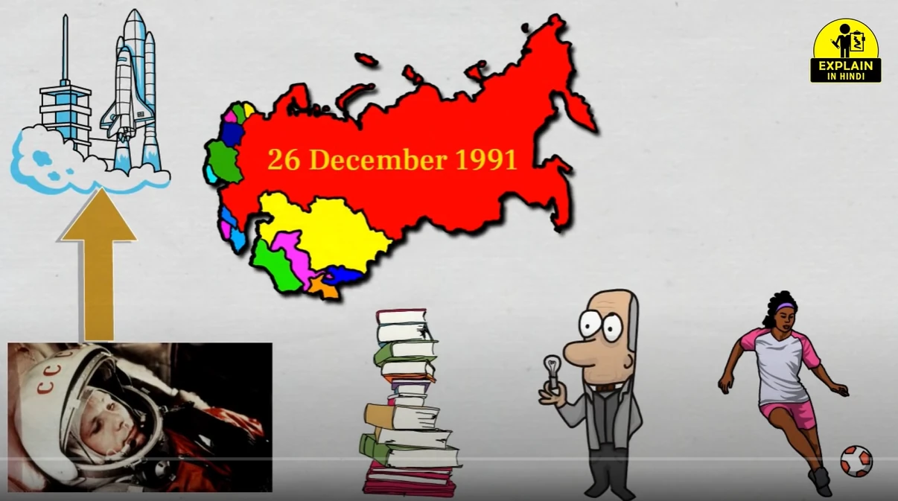
सोवियत संघ ने विज्ञान, खेल और अंतरिक्ष अनुसंधान के क्षेत्र में अमेरिका को कड़ी टक्कर दी थी:
- स्पुतनिक 1 (Sputnik 1): 1957 में अंतरिक्ष में भेजा गया दुनिया का पहला कृत्रिम उपग्रह।
- यूरी गाग्रिन (Yuri Gagarin): 12 अप्रैल 1961 को अंतरिक्ष में जाने वाले पहले मानव बने।
• प्रश्न: अंतरिक्ष रेस (Space Race) में सोवियत संघ ने पहली बड़ी सफलता क्या हासिल की थी?
• उत्तर: सोवियत संघ ने 1957 में दुनिया के पहले उपग्रह 'स्पुतनिक 1' को अंतरिक्ष में भेजकर अमेरिका पर बढ़त हासिल की थी।
3. पॉलिट ब्यूरो और कम्युनिस्ट पार्टी का ढांचा (Structure of Politburo)
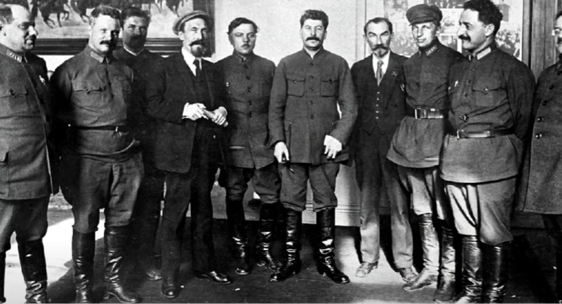
सोवियत संघ की कम्युनिस्ट पार्टी का नीति-निर्धारक मंडल 'पॉलिट ब्यूरो' (Politburo) था, जहाँ सभी प्रमुख राजनेता बैठकर फैसले करते थे। यह संस्था संसद (सुप्रीम सोवियत) से भी अधिक शक्तिशाली थी।
• प्रश्न: सोवियत प्रणाली में सत्ता का वास्तविक केंद्र कौन सी संस्था थी?
• उत्तर: कम्युनिस्ट पार्टी का 'पॉलिट ब्यूरो' (Politburo), जो सभी आर्थिक और राजनीतिक नीतियों का निर्धारण करता था।
4. व्यवस्था की कमियां जो पतन का कारण बनीं (Flaws of the System)
- नौकरशाही का शिकंजा: व्यवस्था बहुत अधिक नौकरशाही प्रधान (Bureaucratic) हो गई थी, जिससे आम जनता का जीना मुश्किल हो गया था।
- लोकतंत्र का अभाव: लोगों को बोलने या विचार व्यक्त करने की आज़ादी नहीं थी। अपनी असहमति लोग केवल चुटकुलों और कार्टूनों के माध्यम से व्यक्त कर सकते थे।
- एक ही पार्टी का शासन: 70 सालों तक सिर्फ कम्युनिस्ट पार्टी का राज रहा और वह जनता के प्रति जवाबदेह नहीं थी।
- रूसी वर्चस्व: सोवियत संघ 15 गणराज्यों से बना था, लेकिन हर मामले में 'रूस' ही दबदबा रखता था जिससे बाकी गणराज्य खुद को उपेक्षित महसूस करते थे।
5. सोवियत संघ के अन्य प्रमुख नेता (Other Soviet Leaders 1953-1985)
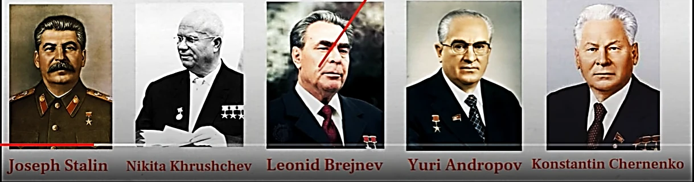
स्टालिन की मृत्यु (1953) के बाद गोर्बाचेव के महासचिव बनने (1985) तक सोवियत संघ में निम्नलिखित बड़े नेताओं का शासन रहा:
- निकिता ख्रुश्चेव (Nikita Khrushchev) (1953 - 1964): उनके समय में 1962 का 'क्यूबा मिसाइल संकट' हुआ, उन्होंने हंगरी के विद्रोह को दबाया और पश्चिमी देशों के साथ 'शांतिपूर्ण सह-अस्तित्व' की नीति अपनाई।
- लियोनिद ब्रेझनेव (Leonid Brezhnev) (1964 - 1982): उनके समय में सोवियत संघ ने 1979 में अफगानिस्तान में हस्तक्षेप किया। उन्होंने अमेरिका के साथ हथियारों के नियंत्रण (SALT 1) पर हस्ताक्षर किए।
- यूरी एंड्रोपोव (Yuri Andropov) (1982 - 1984) और कॉन्स्टेंटिन चेर्नेंको (Konstantin Chernenko) (1984 - 1985): यह दोनों नेता बहुत कम समय तक शासन कर पाए और उनके शासनकाल में सोवियत संघ की अर्थव्यवस्था और अधिक पिछड़ गई।
• प्रश्न: क्यूबा मिसाइल संकट (1962) के समय सोवियत संघ के नेता कौन थे?
• उत्तर: निकिता ख्रुश्चेव (Nikita Khrushchev)।
🛑 हथियारों की होड़ और अर्थव्यवस्था की स्थिरता
शीत युद्ध की होड़ में सोवियत संघ ने अपने संसाधन हथियारों की दौड़ और अंतरिक्ष अनुसंधान में झोंक दिए। इसका बुरा असर देश की आम जनता पर पड़ा और उपभोक्ता वस्तुओं की भारी कमी हो गई। 1970 के दशक के अंतिम वर्षों में सोवियत अर्थव्यवस्था पूरी तरह ठहर (Stagnate) गई थी।
भाग 3: मिखाइल गोर्बाचेव की नीतियां और सोवियत संघ का पतन
1985 में मिखाइल गोर्बाचेव (Mikhail Gorbachev) सोवियत संघ की कम्युनिस्ट पार्टी के महासचिव बने। उन्होंने सोवियत संघ को तकनीकी रूप से आधुनिक बनाने और अर्थव्यवस्था में सुधार करने के लिए दो प्रमुख नीतियां पेश कीं:
मिखाइल गोर्बाचेव (Mikhail Gorbachev) (1931 - 2022)
• परिचय: सोवियत संघ के अंतिम राष्ट्रपति और महासचिव (1985-1991)।
• योगदान: सोवियत संघ में लोकतंत्रिक सुधारों ('पेरेस्त्रोइका' - पुनर्गठन और 'ग्लासनोस्त' - खुलापन) की शुरुआत की। उन्होंने शीत युद्ध को समाप्त किया और जर्मनी के शांतिपूर्ण एकीकरण में केंद्रीय भूमिका निभाई। लेकिन सुधारों के कारण सोवियत संघ का पतन हो गया।
- पेरेस्त्रोइका (Perestroika - पुनर्गठन): अर्थव्यवस्था और प्रशासनिक सुधारों का एक पैकेज।
- ग्लासनोस्त (Glasnost - खुलापन): नागरिकों को अभिव्यक्ति की आज़ादी और लोकतांत्रिक माहौल प्रदान करना।
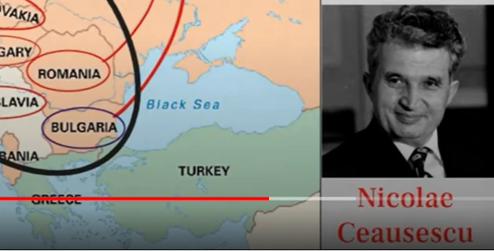
पूर्वी यूरोप के सभी कम्युनिसिट खेमे के देशों में से केवल रोमानिया (Romania) में पतन हिंसक रहा। तानाशाह निकोले चाउसेस्कु (Nicolae Ceaușescu) ने विरोधियों पर सेना का प्रयोग किया, लेकिन बाद में जनता ने उसे लाइव टीवी के सामने मार दिया।
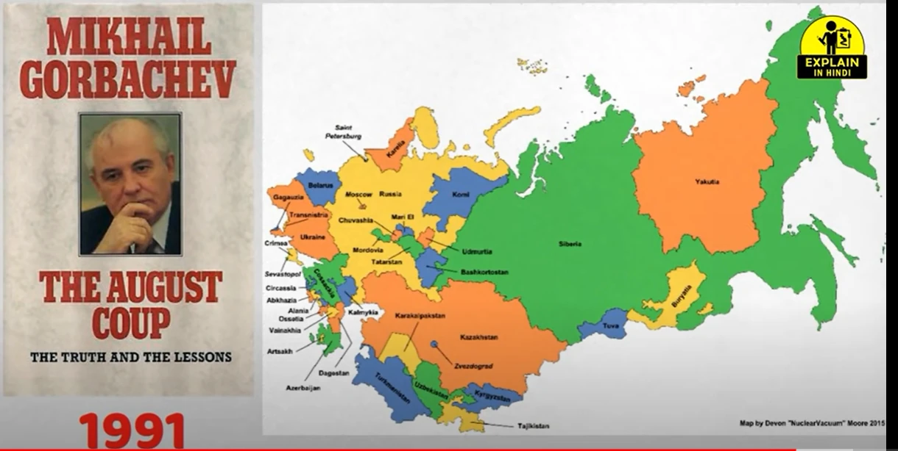
अगस्त 1991 में कम्युनिस्ट पार्टी के 8 कट्टरपंथी नेताओं ने गोर्बाचेव को क्रीमिया में नजरबंद कर दिया और आपातकाल की घोषणा कर दी। इसे 'अगस्त कूप' (August Coup) कहा जाता है। जनता के भारी विरोध के कारण यह तख्तापलट विफल हो गया।
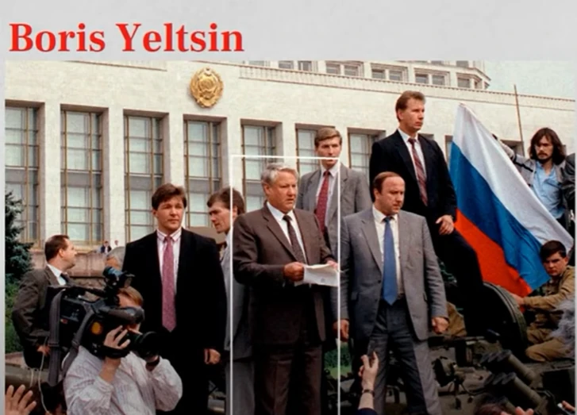
बोरिस येल्तसिन ने तख्तापलट का विरोध करने के लिए मॉस्को की सड़कों पर एक टैंक पर चढ़कर ऐतिहासिक भाषण दिया और सोवियत संघ के पतन को रोकने के प्रयास का विरोध किया।
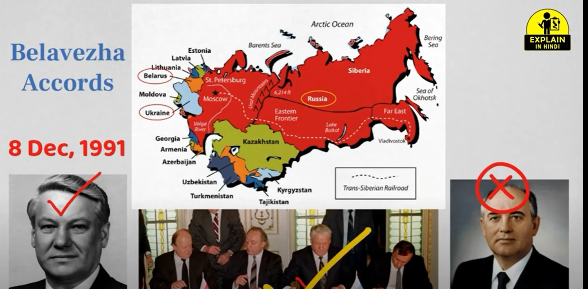
दिसंबर 1991 में रूस (बोरिस येल्तसिन), यूक्रेन (लियोनिद क्रावचुक), और बेलारूस (स्टैनिस्लाव शुश्केविच) के नेताओं ने बेलवेज़ा समझौते पर हस्ताक्षर कर आधिकारिक रूप से सोवियत संघ (USSR) की समाप्ति और राष्ट्रों के स्वतंत्र राष्ट्रकुल (CIS) की स्थापना की।
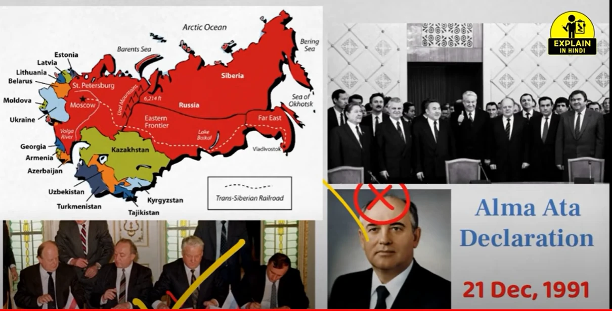
25 दिसंबर 1991 को मिखाइल गोर्बाचेव ने सोवियत संघ के राष्ट्रपति पद से इस्तीफा दे दिया, और क्रेमलिन (सोवियत राष्ट्रपति महल) से सोवियत लाल झंडा उतारकर रूसी तिरंगा झंडा फहरा दिया गया।
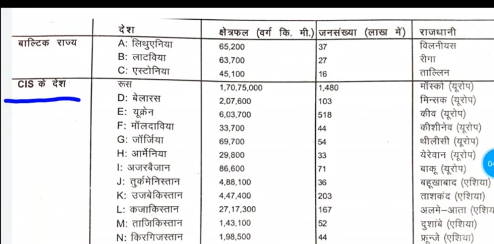
सोवियत संघ के विघटन के बाद बने 15 देशों का विवरण। इसमें 3 बाल्टिक राज्य (लिथुआनिया, लातविया, एस्टोनिया) और 12 स्वतंत्र राज्यों के राष्ट्रकुल (CIS) देशों की राजधानियां, क्षेत्रफल और उनकी भौगोलिक स्थिति की सूची दी गई है।
विघटन का धमाका: आखिर सोवियत संघ क्यों टूटा?
- हथियारों की होड़ (Arms Race): अपनी अधिकांश आय अमेरिका के साथ सैन्य होड़ और परमाणु हथियारों के उत्पादन में खर्च करना।
- आर्थिक गतिरोध: उपभोक्ता वस्तुओं की भयानक कमी और गिरता हुआ जीवन स्तर।
- राष्ट्रवाद का उदय (Rise of Nationalism): रूस, यूक्रेन, जॉर्जिया और बाल्टिक देशों (एस्टोनिया, लातविया, लिथुआनिया) में संप्रभुता की तीव्र आकांक्षा।
- पार्टी का कट्टरपंथ: 1991 के तख्तापलट के प्रयास के कारण देश की राजनीतिक स्थिरता समाप्त होना।
भाग 4: शॉक थेरेपी और विघटन के बाद के संघर्ष
सोवियत संघ के पतन के बाद, इन सभी देशों ने साम्यवादी व्यवस्था छोड़कर पूंजीवादी-लोकतांत्रिक व्यवस्था अपनाने का फैसला किया। इस अचानक हुए आर्थिक संक्रमण के तरीके को 'शॉक थेरेपी' (आघात पहुँचाकर उपचार) कहा गया, जिसे विश्व बैंक (World Bank) और IMF द्वारा निर्देशित किया गया था।
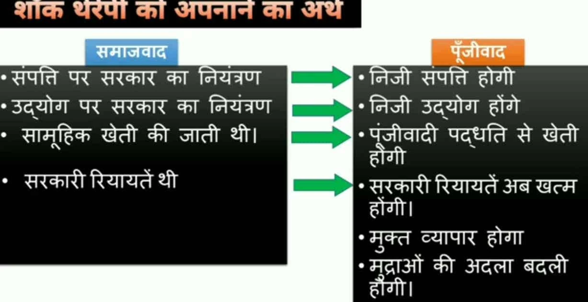
यह तुलनात्मक आरेख सोवियत प्रणाली (सामूहिक स्वामित्व, रियायतें, राज्य नियंत्रण) से पूंजीवादी प्रणाली (निजी स्वामित्व, मुक्त व्यापार, मुद्रा परिवर्तनशीलता) में होने वाले बदलावों को समझने का सरलतम तरीका है।
बोरिस येल्तसिन (Boris Yeltsin) (1931 - 2007)
• परिचय: रूसी गणराज्य के पहले निर्वाचित राष्ट्रपति (1991-1999)।
• योगदान: 1991 के कम्युनिस्ट कट्टरपंथियों के तख्तापलट के खिलाफ विरोध का नेतृत्व किया। सोवियत संघ के विघटन के बाद रूस को एक पूंजीवादी और स्वतंत्र राष्ट्र बनाने में मुख्य भूमिका निभाई, हालाँकि उनके शासनकाल में शॉक थेरेपी की वजह से अर्थव्यवस्था में मंदी आई।
1. शॉक थेरेपी के भयंकर परिणाम (Consequences)
- इतिहास की सबसे बड़ी गराज सेल (The Largest Garage Sale in History): रूस का पूरा औद्योगिक ढांचा चरमरा गया। लगभग 90% उद्योगों को बेहद कम दाम पर प्राइवेट कंपनियों को बेच दिया गया।
- मुद्रा का अवमूल्यन: रूसी मुद्रा 'रूबल' में भारी गिरावट आई और जनता की जीवन भर की बचत समाप्त हो गई।
- माफिया वर्ग का उदय (Rise of Mafia): आर्थिक अराजकता के कारण माफिया वर्ग का नियंत्रण बढ़ा, जिसके कारण बड़े पैमाने पर भ्रष्टाचार और असमानता फैली।
- समाज कल्याण व्यवस्था का पतन: सब्सिडी बंद होने से गरीबी बढ़ी और अमीर-गरीब की खाई और चौड़ी हो गई।
2. पूर्व-सोवियत गणराज्यों में गृहयुद्ध और संघर्ष
- रूस: चेचन्या और दागेस्तान में हिंसक अलगाववादी आंदोलन हुए।
- ताजाकिस्तान: यहाँ लगभग 10 वर्षों (2001 तक) तक गृहयुद्ध (Civil War) चला।
- यूगोस्लाविया: पूर्वी यूरोप का यह देश टूटकर गृहयुद्ध की चपेट में आ गया, जिसमें स्लोवेनिया, क्रोएशिया और बोस्निया में भीषण नरसंहार हुए।
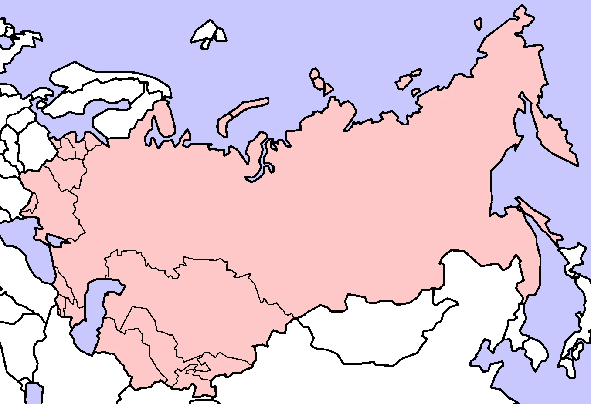
सोवियत संघ के विघटन के बाद, उससे अलग हुए 15 स्वतंत्र देशों का विस्तृत और बड़ा नक्शा।
• प्रश्न: सोवियत संघ के विघटन के बाद कौन से तीन बड़े गणराज्य अलग हुए?
• उत्तर: रूस, यूक्रेन और बेलारूस ने दिसंबर 1991 में सोवियत संघ के विघटन की घोषणा की।
भाग 5: भारत और पूर्व-साम्यवादी देश
सोवियत संघ के विघटन के बाद भी भारत ने रूस और अन्य सभी मध्य-एशियाई देशों के साथ अपने मैत्रीपूर्ण संबंध बनाए रखे। दोनों देशों के बीच 2001 में एक द्विपक्षीय समझौता हुआ, जिसमें कई रक्षा, अंतरिक्ष और व्यापारिक मुद्दों पर सहमति बनी।
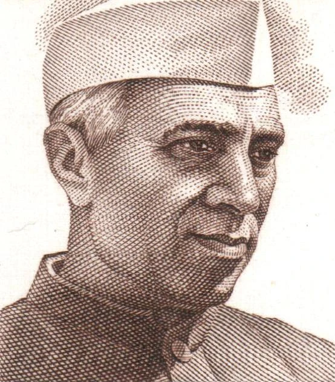
भारत और सोवियत संघ / रूस के बीच घनिष्ठ मित्रता का चित्र। सोवियत संघ ने भारत के औद्योगीकरण, भिलाई और बोकारो स्टील प्लांट, और 1971 के युद्ध के दौरान हमेशा मदद की है।
• प्रश्न: भारत और रूस के बीच मित्रता के किन्हीं दो आयामों का उल्लेख कीजिए।
• उत्तर: (1) सामरिक: कश्मीर और सुरक्षा मुद्दों पर रूस हमेशा भारत के साथ रहा है। (2) आर्थिक: अंतरिक्ष, रक्षा और ऊर्जा क्षेत्रों में दोनों देशों के बीच गहरा सहयोग है।
विस्तृत प्रश्न बैंक (Mega Question Bank)
प्रश्न 1: सोवियत प्रणाली क्या थी? इसके पतन के दो कारण लिखें।
उत्तर: सोवियत प्रणाली वह व्यवस्था थी जिसमें उत्पादन के साधनों पर पूर्ण राज्य का नियंत्रण था। पतन के कारण: (1) नौकरशाही का नियंत्रण और तानाशाही। (2) हथियारों की होड़ के कारण आर्थिक गतिरोध।
प्रश्न 2: शॉक थेरेपी से आप क्या समझते हैं? इसके दो दुष्परिणाम लिखें।
उत्तर: साम्यवाद छोड़कर पूंजीवादी व्यवस्था अपनाने के अत्यंत तीव्र आर्थिक बदलाव के मॉडल को शॉक थेरेपी कहा गया। दुष्परिणाम: (1) इतिहास की सबसे बड़ी गराज सेल (2) रूसी मुद्रा रूबल में भारी गिरावट।
अध्याय का संपूर्ण गुरुमन्त्र (Quick Box Summary)
- बोल्शेविक क्रांति (1917): सोवियत संघ के गठन का प्रस्थान बिंदु।
- बर्लिन की दीवार: शीत युद्ध के विभाजन का प्रतीक (गिराई गई: 9 नवंबर 1989)।
- सोवियत विघटन (दिसंबर 1991): रूस, यूक्रेन और बेलारूस द्वारा घोषणा; उत्तराधिकारी देश: रूस।
- शॉक थेरेपी: साम्यवाद से पूंजीवाद में परिवर्तन का आघातकारी मॉडल।
भाग 6: शीत युद्ध की जड़ें और प्रमुख संघर्ष (Deep Analysis)
1. शीत युद्ध का उदय: केवल एक वैचारिक लड़ाई नहीं
शीत युद्ध (Cold War) केवल अमेरिका और सोवियत संघ के बीच की लड़ाई नहीं थी, बल्कि यह दुनिया को देखने के दो अलग-अलग नजरियों की टक्कर थी। एक तरफ **पूंजीवादी (Capitalist)** विचारधारा थी, जो 'निजी संपत्ति' और 'लोकतंत्र' में विश्वास रखती थी, और दूसरी तरफ **साम्यवादी (Communist)** विचारधारा थी, जो 'समानता' और 'राज्य के नियंत्रण' पर आधारित थी।
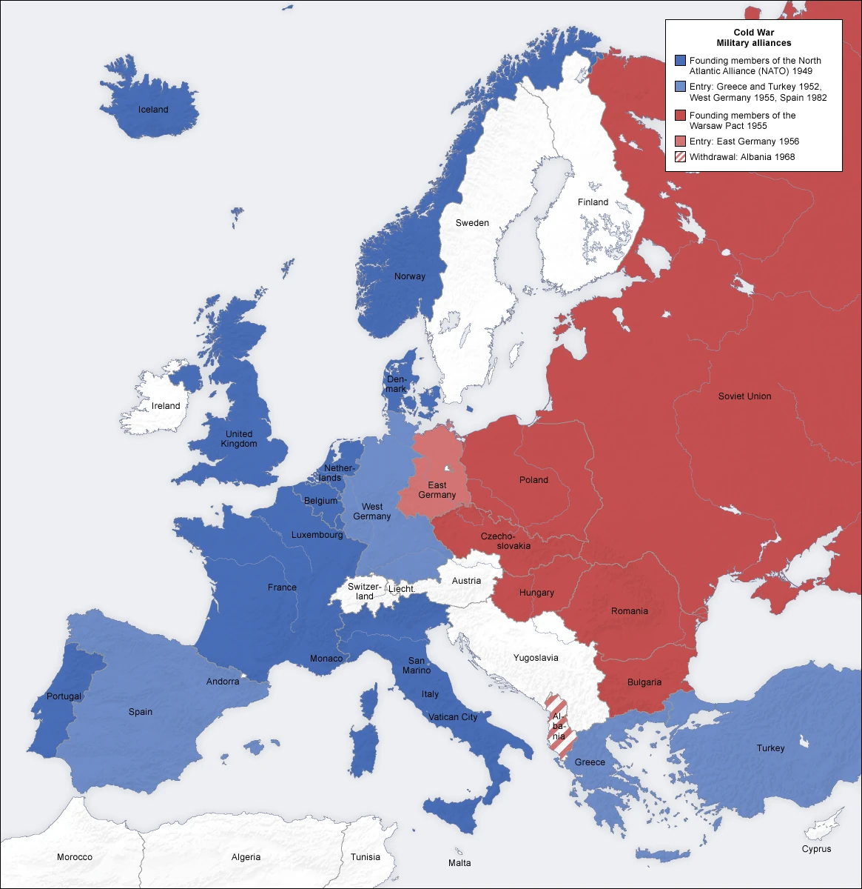
• प्रश्न: शीत युद्ध क्या था?
• उत्तर: द्वितीय विश्व युद्ध के बाद संयुक्त राज्य अमेरिका और सोवियत संघ के बीच वैचारिक प्रतिद्वंद्विता, राजनीतिक तनातनी और हथियारों की होड़ की स्थिति को शीत युद्ध कहा जाता है।
चित्र 6.1: विश्व का दो गुटों में विभाजन (स्रोत: NCERT)
2. प्रमुख टकराव के बिंदु (Flashpoints)
- बर्लिन की घेराबंदी (1948): यह पहली बार था जब दोनों महाशक्तियां सीधे आमने-सामने खड़ी थीं।
- कोरियाई युद्ध (1950-53): उत्तर और दक्षिण कोरिया के बीच की जंग ने शीत युद्ध को एशिया तक पहुँचा दिया।
- क्यूबा मिसाइल संकट (1962): शीत युद्ध का चरम बिंदु (Peak Point), जब दुनिया परमाणु युद्ध की कगार पर खड़ी थी।
- वियतनाम युद्ध (1955-75): सोवियत समर्थित उत्तरी वियतनाम और अमेरिकी समर्थित दक्षिण वियतनाम के बीच भीषण संघर्ष।
💡 बोर्ड परीक्षा के लिए विशेष (Exam Tip):
सोवियत संघ ने इन सभी संघर्षों में अपने सहयोगियों को न केवल हथियार दिए, बल्कि अपनी पूरी ऊर्जा भी झोंक दी, जिससे उसकी घरेलू अर्थव्यवस्था कमजोर पड़ने लगी। यह 'विघटन' की पहली बड़ी निशानी थी।
3. महाशक्तियों के लिए छोटे देशों का महत्व
दोनों महाशक्तियां छोटे देशों को अपने गुट में शामिल करना चाहती थीं क्योंकि:
- प्राकृतिक संसाधन: तेल और खनिज पदार्थों तक पहुँच।
- भू-क्षेत्र (Territory): सेना और हथियारों के लिए अड्डे बनाना।
- जासूसी (Intelligence): एक-दूसरे पर नजर रखना।
- आर्थिक मदद: सैन्य खर्चों में छोटे देशों का योगदान।
भाग 7: अर्थव्यवस्था का विश्लेषण - सोवियत बनाम अमेरिकी प्रणाली
1. सोवियत आर्थिक प्रणाली की ताकत और कमजोरी
सोवियत संघ की अर्थव्यवस्था दुनिया की दूसरी सबसे शक्तिशाली अर्थव्यवस्था थी। इसकी मुख्य ताकत इसके संसाधन (तेल, लोहा, इस्पात) और परिवहन प्रणाली थी। लेकिन इसकी सबसे बड़ी कमजोरी **'तकनीकी पिछड़ापन'** थी। जहाँ पश्चिमी देश तेजी से कंप्यूटर और इलेक्ट्रॉनिक उपकरणों में आगे बढ़ रहे थे, सोवियत संघ अभी भी भारी उद्योगों (Heavy Industries) में उलझा हुआ था।
• प्रश्न: सोवियत अर्थव्यवस्था की कोई एक मुख्य विशेषता बताइए।
• उत्तर: सोवियत अर्थव्यवस्था में उत्पादन के सभी साधनों पर राज्य (सरकार) का सीधा नियंत्रण और मालिकाना हक होता था।
चित्र 7.1: सोवियत औद्योगिक क्लस्टर - विकास और पतन (स्रोत: NCERT)
2. तुलनात्मक तालिका: दो महाशक्तियों के बीच की टक्कर
📊 शॉक थेरेपी और आर्थिक गतिहीनता
सोवियत संघ का पतन रातों-रात नहीं हुआ। इसके पीछे 1970 के दशक के बाद की **आर्थिक गतिहीनता (Economic Stagnation)** थी। उपभोक्ता वस्तुओं की कमी होने लगी और लोगों को लंबी-लंबी कतारों में खड़ा होना पड़ता था। यह वह समय था जब सोवियत संघ तकनीकी और मनोवैज्ञानिक रूप से पिछड़ चुका था।
भाग 8: वैश्विक प्रभाव - सोवियत विघटन के बाद की दुनिया
1. एकध्रुवीय विश्व (Unipolar World) का उदय
सोवियत संघ के पतन के साथ ही शीत युद्ध (Cold War) का अंत हो गया और दुनिया 'दो ध्रुवीय' (Bipolar) से 'एक ध्रुवीय' (Unipolar) बन गई। अब पूरी दुनिया पर केवल एक ही महाशक्ति का शासन था— **संयुक्त राज्य अमेरिका (USA)**। पूरी दुनिया में पूंजीवादी अर्थव्यवस्था (Capitalism) ही प्रभुत्व में आ गई।

• प्रश्न: एक ध्रुवीय विश्व से क्या अभिप्राय है?
• उत्तर: सोवियत संघ के पतन के बाद जब पूरे विश्व में केवल एक महाशक्ति (संयुक्त राज्य अमेरिका) का वर्चस्व स्थापित हो गया, तो उसे एक ध्रुवीय विश्व कहा गया।
चित्र 8.1: सोवियत विघटन के बाद उभरते हुए नए राष्ट्र-राज्य और वैश्विक व्यवस्था (स्रोत: NCERT)
2. शक्ति के नए केंद्रों का उदय (New Centers of Power)
- चीन का उदय (Rise of China): सोवियत संघ के पतन के बाद, चीन ने अपनी अर्थव्यवस्था को बहुत तेजी से विकसित किया और आज वह अमेरिका का सबसे बड़ा प्रतिद्वंद्वी है।
- यूरोपीय संघ (European Union): यूरोप के देशों ने अपनी एकता के माध्यम से एक नई आर्थिक और राजनीतिक शक्ति बनाई।
- आसियान (ASEAN): दक्षिण-पूर्वी एशियाई देशों ने साझी सुरक्षा और आर्थिक उन्नति का मार्ग अपनाया।
- ब्रिक्स (BRICS): भारत, रूस, चीन, ब्राजील और दक्षिण अफ्रीका जैसे उभरते हुए देशों का समूह।
🌏 बहुध्रुवीय विश्व की ओर (Towards Multipolar World)
आज दुनिया फिर से बदल रही है। हम एक ऐसे युग में प्रवेश कर रहे हैं जहाँ कोई एक देश सब पर राज नहीं कर सकता। भारत और रूस जैसी शक्तियां दुनिया को **बहुध्रुवीय (Multipolar)** बनाने की दिशा में काम कर रही हैं, जहाँ सभी राष्ट्रों को समान महत्व मिले।
3. मध्य एशियाई देशों का महत्व
विघटन के बाद, रूस के अलावा मध्य एशियाई देश (जैसे ताजिकिस्तान, कज़ाकिस्तान) बहुत महत्वपूर्ण हो गए क्योंकि ये देश ऊर्जा (गैस और तेल) के बहुत बड़े भंडार हैं। चीन और रूस यहाँ अपना प्रभाव बढ़ाने के लिए आज भी काफी संघर्ष कर रहे हैं।
भाग 9: मास्टर प्रश्न बैंक - 50+ महत्वपूर्ण प्रश्न (Part 1)
1. बहुविकल्पीय प्रश्न (MCQs) - बोर्ड स्पेशल
- सोवियत संघ का जन्म कब हुआ? (1917 / 1945 / 1991)
Ans: 1917 - बर्लिन की दीवार को कब गिराया गया? (1961 / 1989 / 1991)
Ans: 1989 - मिखाइल गोर्बाचेव कम्युनिस्ट पार्टी के महासचिव कब बने? (1985 / 1991 / 2000)
Ans: 1985 - सोवियत संघ के उत्तराधिकारी (Successor) के रूप में किस देश को चुना गया? (रूस / यूक्रेन / बेलारूस)
Ans: रूस
2. लघु उत्तरीय प्रश्न (2-4 अंक)
Q1: 'दूसरी दुनिया' का क्या अर्थ है?
Ans: द्वितीय विश्व युद्ध के बाद, पूर्वी यूरोप के वे देश जो सोवियत संघ के प्रभाव में आए और जिन्होंने समाजवादी प्रणाली अपनाई, उन्हें 'दूसरी दुनिया' कहा गया।
Q2: सोवियत प्रणाली की दो सबसे बड़ी कमियाँ बताएं।
Ans: (i) नौकरशाही का कठोर नियंत्रण (ii) लोकतंत्र और बोलने की आज़ादी का अभाव।
Q3: पेरेस्त्रोइका और ग्लासनोस्त का क्या अर्थ है?
Ans: पेरेस्टोइका का अर्थ है 'पुनर्रचना' (Economic Restructuring) और ग्लासनोस्त का अर्थ है 'खुलापन' (Openness)। ये दोनों मिखाइल गोर्बाचेव द्वारा पेश किए गए सुधार थे।
3. दीर्घ उत्तरीय प्रश्न (6 अंक) - पक्का आने वाले!
Q1: सोवियत संघ के विघटन के पीछे मुख्य राजनीतिक और आर्थिक कारणों का विस्तार से वर्णन करें।
Ans: इसमें आपको (i) हथियारों की होड़ (ii) नौकरशाही के दोष (iii) मिखाइल गोर्बाचेव की सुधार नीतियों का गलत प्रभाव (iv) रूस का वर्चस्व और उपेक्षा (v) राष्ट्रवाद की भावना का उदय—इन सभी बिंदुओं का विस्तार से वर्णन करना होगा।
Q2: शॉक थेरेपी क्या थी और इसके आर्थिक और सामाजिक परिणामों का विश्लेषण करें।
Ans: इसमें साम्यवाद से पूंजीवाद के अचानक बदलाव, रूसी मुद्रा के अवमूल्यन, औद्योगिक ढांचे के विनाश और माफिया वर्ग के उदय का वर्णन करें।
4. मिलान करें (Match the following) - बोर्ड स्पेशल
1. जोसेफ स्टालिन --- (क) पेरेस्त्रोइका
2. मिखाइल गोर्बाचेव --- (ख) सोवियत संघ के प्रथम महासचिव
3. व्लादिमीर लेनिन --- (ग) द्विध्रुवीयता का प्रतीक
4. बर्लिन की दीवार --- (घ) सामूहिकीकरण के जनक
हल (Solution): 1-घ, 2-क, 3-ख, 4-ग
भाग 10: बोर्ड परीक्षा विशेषांक - पिछले 10 वर्षों के महत्वपूर्ण प्रश्न (2014-2024)
1. बोर्ड परीक्षा में अक्सर पूछे जाने वाले सवाल (Top Picks)
🛑 2018 और 2022 बोर्ड एग्जाम स्पेशल:
Q: सोवियत संघ के विघटन के भारत पर क्या प्रभाव पड़े?
Ans: (i) भारत का एक बहुत बड़ा रक्षा भागीदार (Defense Partner) कमजोर हो गया। (ii) भारत को रूस और अन्य मध्य एशियाई देशों के साथ नए सिरे से कूटनीतिक संबंध बनाने पड़े। (iii) भारत ने बहुध्रुवीय विश्व की मांग को और मजबूती से उठाया।
🛑 2016 और 2021 बोर्ड एग्जाम स्पेशल:
Q: 'शॉक थेरेपी' मॉडल का मुख्य उद्देश्य क्या था और यह विफल क्यों हुआ?
Ans: इसका मुख्य उद्देश्य सोवियत संघ के देशों को साम्यवाद से पूंजीवाद में बदलना था। यह विफल इसलिए हुआ क्योंकि यह सुधार बहुत अचानक और बिना किसी तैयारी के किया गया था, जिससे देश की अर्थव्यवस्था बर्बाद हो गई और माफिया राज आ गया।
2. दीर्घ उत्तरीय प्रश्न (Last 10 Years)
Q: सोवियत संघ की उन 6 विशेषताओं का वर्णन करें जो इसे एक महाशक्ति बनाती थीं? (2015-2019 CBSE)
- 1. उन्नत संचार और विशाल ऊर्जा संसाधन।
- 2. आवागमन की बेहतरीन सुविधाएं।
- 3. नागरिकों के लिए न्यूनतम जीवन स्तर की गारंटी (सब्सिडी)।
- 4. बेरोज़गारी का अभाव।
- 5. अमेरिका के बाद दुनिया की दूसरी सबसे बड़ी अर्थव्यवस्था।
- 6. विशाल सैन्य शक्ति और परमाणु हथियार।
🔥 बोर्ड परीक्षा के लिए ब्रह्मास्त्र (Ultimate Revision) 🔥
1. व्लादिमीर लेनिन (संस्थापक)
2. मिखाइल गोर्बाचेव (सुधार और पतन के समय के नेता)
3. बोरिस येल्तसिन (रूस के पहले निर्वाचित राष्ट्रपति)
4. 1917: जन्म, 1991: पतन
5. सी.आई.एस (CIS): सोवियत संघ का उत्तराधिकारी संगठन
6. बहुध्रुवीय विश्व: भारत की पहली पसंद